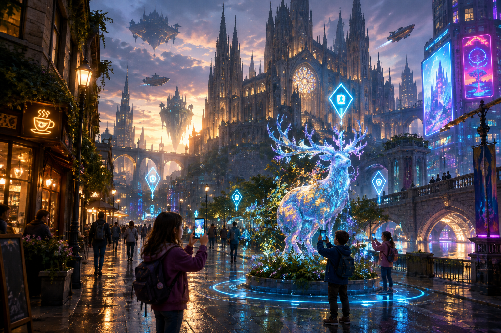
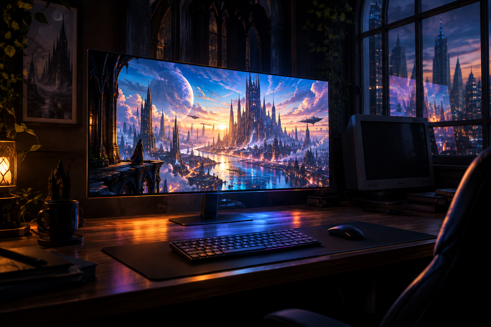
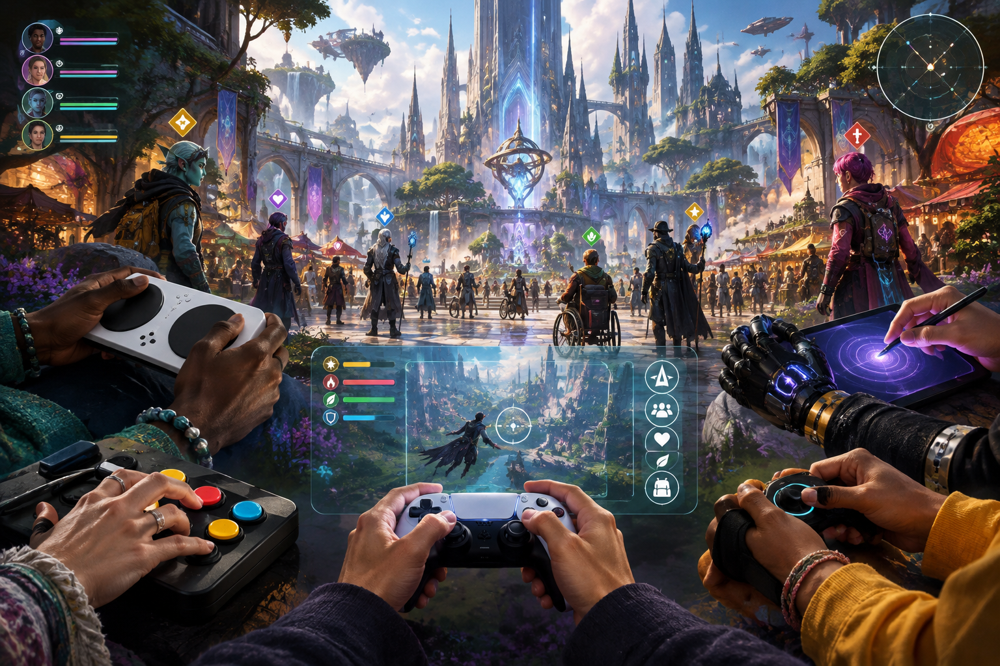
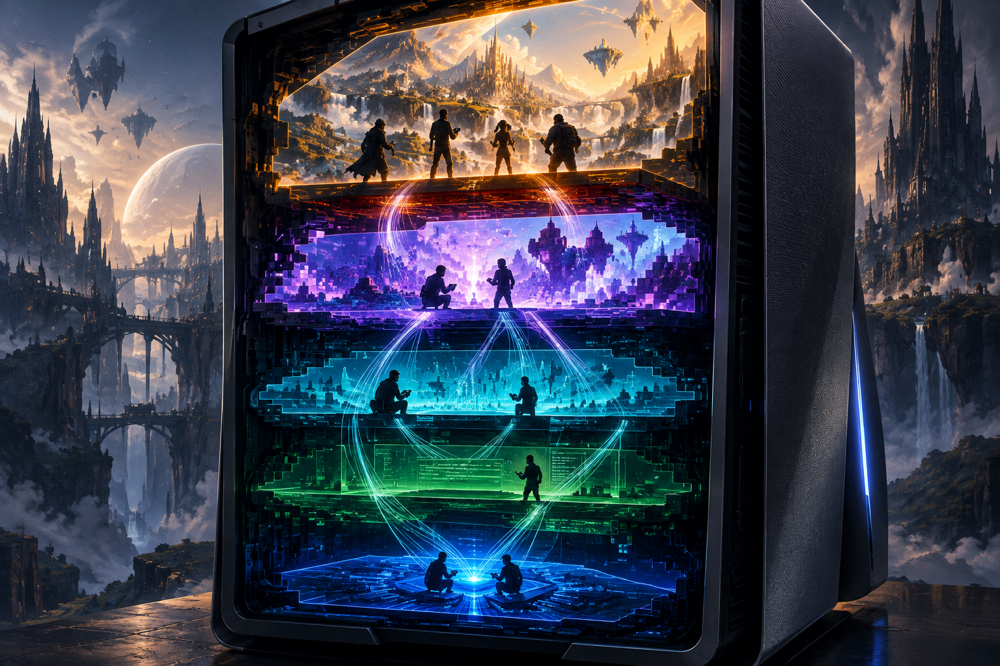

Outside the Console: How Real-World Locations Are Becoming Game Worlds in 2026
In 2026, physical environments—from stores to schools to city streets—are adopting the language, logic, and aesthetics of games, transforming the world beyond the screen into interactive, living playgrounds.
READ THE STORY ↗
Clearer, Brighter, Faster: How OLED Monitors Became PC Gaming’s Must-Have Upgrade in 2026
Thanks to sharp price drops, technological leaps, and shifting upgrade priorities, high-end OLED monitors have exploded in popularity this year—radically altering what PC gamers expect from their visual experience.
READ THE STORY ↗
Accessible Adventures: How MMORPGs in 2026 Are Breaking Down Barriers for All Players
Industry-wide initiatives and innovative design choices are forging MMORPG worlds everyone can play in. Here’s how cutting-edge accessibility—spanning UI, customization, and universal tags—is changing the landscape for gamers with disabilities.
READ THE STORY ↗Beyond the Script: How AI-Driven NPCs Are Redefining Player Interaction in RPGs
Procedural storytelling and adaptive personalities are allowing NPCs to break free from static roles—and RPG worlds may never be the same.
READ THE STORY ↗
Hardware vs. Harmony: How Console Limitations Shape the Future of Co-Op Gaming
From split performance to innovative developer workarounds, we investigate how hardware constraints impact today's console co-op—revealing why not all co-op experiences are created equal and how studios are pushing the boundaries for shared play.
READ THE STORY ↗